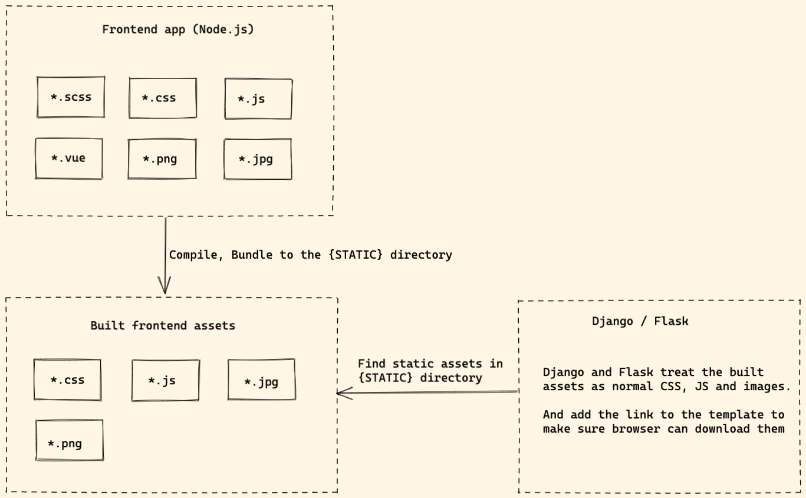
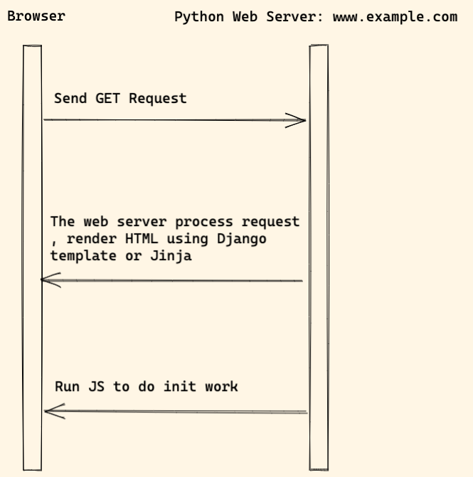

Classic architecture
Diagram

- The frontend app compile and bundle frontend assets
- After it finish building, the built assets can be found at
STATICdirectory. - Django or Flask will treat the built assets as normal files and do not care where they come from.
- Django or Flask will add the JS and CSS link to the template to make sure browser can download them.
Workflow

Notes:
- When user visit the website, Python web server process the request, render HTML from using Django template or Jinja.
- The browser download CSS, JS and other assets and render web page.
Benefits of the modern frontend app
Some people might ask:
- Why not just import some JS packages using CDN link
- Why should we import some bundle solution such as Webpack.
Because:
Webpackis the most popular bundle solution in the frontend community today, it has received 50k stars on Github.- It has a great ecosystem, many plugins, loaders. If we search
webpackon npmjs.com, we can get 20k resulst. - If we do not need
React,Vue, we can still use Webpack to help us compileES6,SCSSand do many other things (Many people do not know that!) - With a proper config, Webpack can save time and let us build modern web application in quick way.
With modern frontend app, it can:
- Linting JS, SCSS code.
- Compile SCSS to CSS.
- Compile and bundle JS files.
- Watch files and auto reload web page on code change.
Frontend
- We can use python-webpack-boilerplate to jump start frontend project bundled by Webpack.
- Alpine.js
- You can also check petite-vue, which is 6kb subset of Vue optimized for progressive enhancement
jQuery
jQuery is not recommended any more and below notes can help if you want to migrate to vanilla JS
- Selecting elements with
querySelectorandquerySelectorAll - Listening for events with
addEventListener - Updating CSS and styles through
styleproperty - Working with classes through the
classListproperty - AJAX requests with
fetchorAxios - Triggering events with
dispatchEvent - Creating elements with
createElement - Updating text through the
textContentproperty - Adding elements to the DOM with
appendChild
Please write code with ES6+ syntax to make the JS code more readable.
Backend
If you want to load Webpack bundle file in Django or Flask:
- django-webpack-loader
- python-webpack-boilerplate supports both Django and Flask.
Pros and Cons
Pros:
- We can still use Django / Flask template syntax and HTML as we are familiar with
- We can write JS and SCSS in modern syntax, the code is more readable and easy to maintain.
- We can import 3-party frontend project without touching template, but use
npm installcommand - Code linter can help check JS and CSS code style.